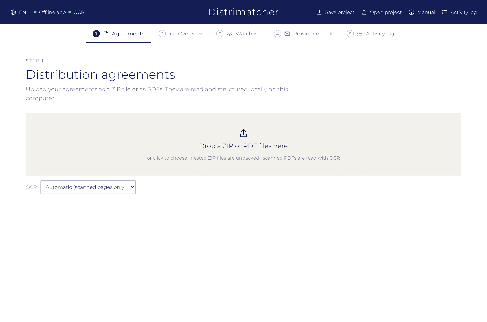
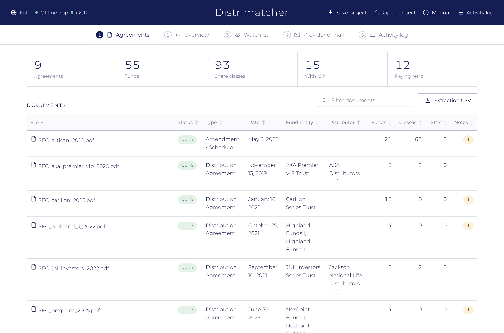
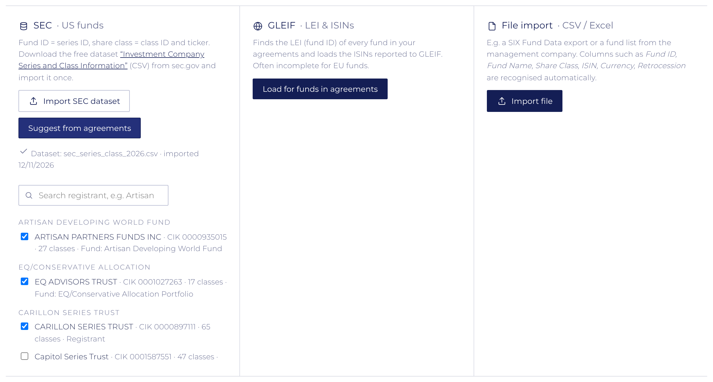
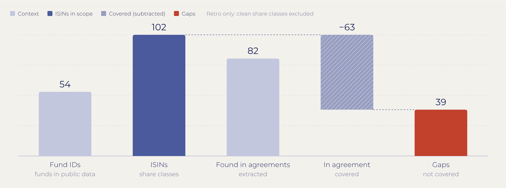
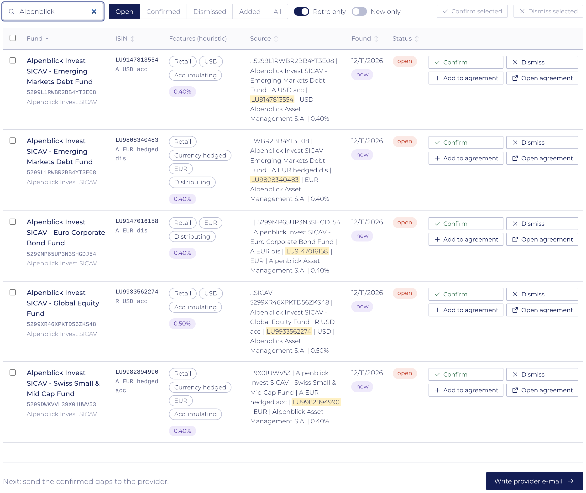
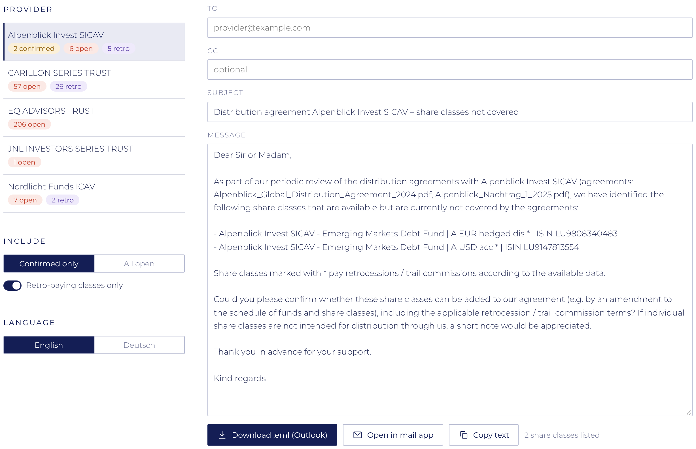
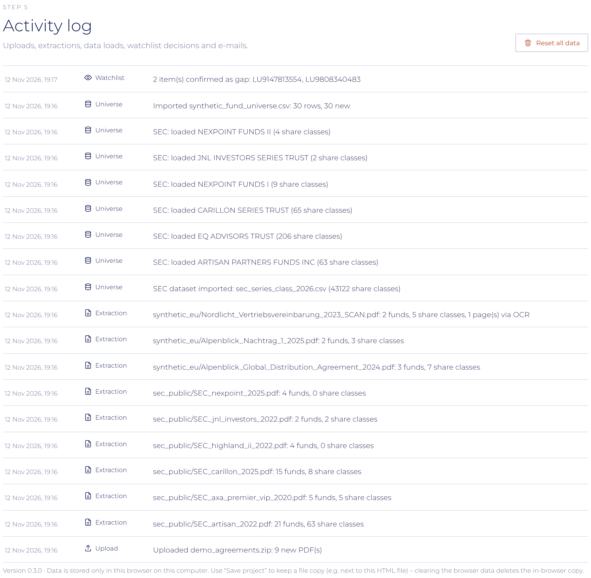

Distrimatcher reads your distribution agreements, compares them with the fund universe and shows every retro-paying share class that is not yet covered.
Make sure that every share class we distribute and that pays retrocessions is covered by a valid distribution agreement, and close every gap quickly, with full transparency for distribution, product management and compliance.
Distrimatcher turns agreements into structured data, matches them against public and internal fund data, and produces a prioritised list of uncovered, retro-paying share classes, with a pre-written e-mail to the provider.
It runs as one HTML file in the browser: no installation, no server and no data transfer. That fits even very restrictive bank IT environments.
Target values. Actual effort savings depend on agreement volume and document quality.
From a folder of PDFs to a clear, actionable list in four steps. These are the six things you get.
Every retro-paying share class without an agreement is flagged. No trail commission is lost because a class is missing from a schedule.
Distribute only what is contractually covered. Each decision (confirm, dismiss, add to agreement) is logged with a timestamp, and evidence links back to the agreement and the source.
ZIP upload, automatic reading of schedules and annexes (including scanned PDFs via OCR) and automatic matching by ISIN, fund name and share class replace manual cross-checking.
A waterfall from fund IDs to gaps, and coverage per umbrella, fund and share class. Sort, filter and export to Excel in one click.
A pre-written, professional e-mail (English or German) listing the uncovered ISINs, ready to open in Outlook. This shortens the path to an amendment.
One HTML file, opened in Edge or Chrome. Nothing to install, no server and no cloud. Agreements never leave the computer.
Distrimatcher connects three worlds: the contracts you hold, the share classes that exist, and the decisions that close the gap.
See which share classes can be offered and where income is at risk.
Receive a precise, consolidated request instead of ad-hoc questions.
Traceable evidence and a full activity log for every decision.
The whole application, including PDF reader, OCR engine, rules and database, is packed into a single HTML file. It runs in Microsoft Edge or Google Chrome on your own PC.
Runs in the browser sandbox. There is no backend, no account and no telemetry.
All libraries and OCR language data are embedded. Only GLEIF needs internet, and it is optional.
Automated tests check the extraction against reference results for every build.
One chart answers the key question: how many retro-paying share classes exist, how many are covered, and how many gaps remain?
covered matched by ISIN, by class name, or because the agreement covers all share classes.
gap not covered by any agreement: goes to the watchlist.
review the fund is named, but its share classes are not specified.
Retro status in order of priority: data (import) → agreement clause → assumed from the class name.
Drop a ZIP. PDFs and scans are read automatically.
Load fund data and see coverage and gaps.
Confirm, dismiss or add gaps to an agreement.
Send the uncovered ISINs to the provider.
Every step with a timestamp, plus data reset.


| Field | Example |
|---|---|
| Parties & roles | Fund entity, distributor, management company |
| Date, law, jurisdiction | 15 March 2024 · Luxembourg |
| Territory, exclusivity | CH, DE, AT · non-exclusive |
| Notice period, term | 90 days · indefinite |
| Retrocession | 40% of management fee; I-classes excluded |
| Funds & classes | from schedules, tables and text |
| Identifiers | ISIN, LEI (check digits verified) |

| Source | What you get | Best for |
|---|---|---|
| File import (CSV / Excel) | Fund ID, ISIN, share class, currency and retrocession, exactly as in your list | SIX Fund Data exports, management company lists |
| SEC dataset (CSV) | Fund ID = series ID, class ID and ticker. Use Suggest from agreements to find the registrant | US mutual funds |
| GLEIF (online) | LEI per fund and the ISINs reported to GLEIF | EU funds (often incomplete) |

Below the chart: umbrella → fund → share class with status, retro flag and the matching agreement. Filter by Gaps, switch Retro only on or off, sort by name, fund ID, most gaps or lowest coverage, and export Retro gaps CSV for Excel.

| Confirm | Real gap: raise it with the provider |
| Dismiss | Not relevant, e.g. not for distribution |
| Add to agreement | Covered elsewhere (side letter): counts as covered |
| Open agreement | Shows the related agreement and its PDF |
Tick several rows to confirm or dismiss them in one go.

Uploads, extractions, data loads, watchlist decisions and e-mails, all with timestamps. It is your audit trail.
Reset all data starts from scratch. Save a project file first if you want to keep the current state.

No. Reading, OCR, extraction and matching run inside the browser. There is no server and no upload. The only optional online call (GLEIF) sends public fund names, never document content.
No. Distrimatcher is a single HTML file. If your PC can open a web page in Edge or Chrome, it can run Distrimatcher.
In the browser storage of this PC. Save project creates a portable file. Clearing the browser’s site data deletes the in-browser copy.
It is rule-based and tested on public SEC agreements and sample EU agreements. ISINs and LEIs are verified by check digit. Unusual layouts are flagged as notes for manual review.
From your imported data first (e.g. a SIX export with a retrocession column), then from the agreement’s retrocession clause, and only as a last resort from the share class name (marked as assumed).
Yes. The in-app manual can be edited, downloaded as a text file and loaded again. This brochure is generated from an editable HTML source.
The mark. A “D” whose outline is not closed. In the gap sits a coral dot: the missing share class that Distrimatcher finds. The sage check stands for coverage that is confirmed. The wordmark sets Distri in light and matcher in semibold.
White and Foam carry the layout, Deep Teal leads, and Signal Coral is reserved for gaps and calls to action. Deep Teal and Coral stay distinguishable for colour-blind readers (checked); values are always labelled in charts.
Montserrat Light
Montserrat Semibold
Headings light, emphasis semibold, eyebrows in spaced capitals. In a bank setting the house font (e.g. Verlag) can replace Montserrat 1:1.
Every share class. Every agreement. No blind spots.
Contact: [team / owner] · [e-mail] · [internal page]
Version 0.3 · November 2026 · Sample data in this brochure is fictitious or from public SEC filings.